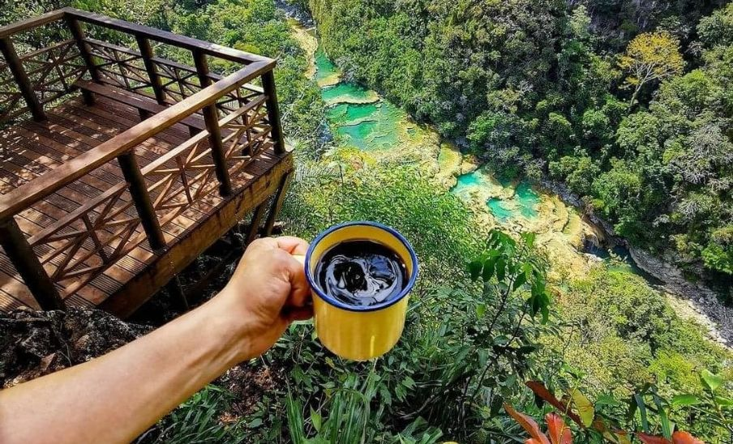
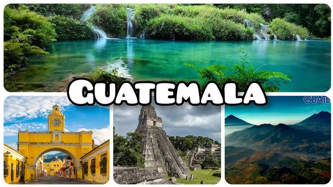
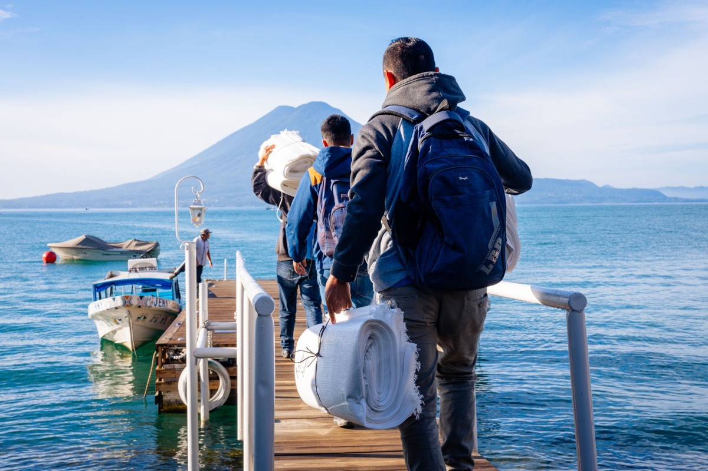
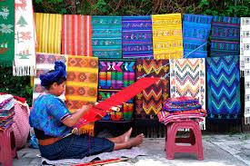

motor economico que genera riqueza de un pais en general
No es desarrollar una actividad no remunerada en un lugar visitado

es un movimiento de ida y vuelta a un destino distinto o residencia

Se basa en la viviencia cultural, el desacanso o el aprendizaje

el viajero decide libremente realizar el viaje

Incluye atracciones, actividades y accesibilidad.